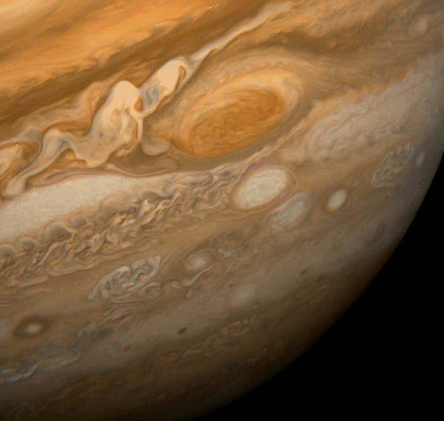

This view of Jupiter's Great Red Spot and its surroundings was obtained by Voyager 1 on February 25, 1979, when the spacecraft was 9.2 million km (5.7 million mi) from Jupiter. The white oval storm directly below the Great Red Spot is approximately the same diameter as Earth.
Jupiter - Great Red Spot is decreasing in size (May 15, 2014)

False-color detail of Jupiter's atmosphere, imaged by Voyager 1, showing the Great Red Spot and a passing white oval.